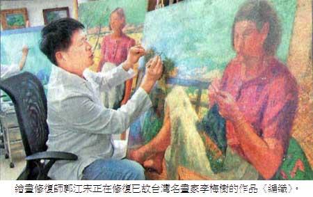

油畫的消失與重生
塵封半世紀國寶 修復師起死回生
江慧真｜中國時報／民國101年消失與重生∣2012年9月2日
二○一○年九月，一通來自總統府的電話，嚇壞了正在清潔畫布的郭江宋，抓起相機他直奔總統府。因為，一件被塵封在國家倉庫長達半世紀的國寶，正面臨消失的命運，就等他能否起死回生。
一九九三年，郭江宋花了七年時間，從西班牙馬德里COMPLUTENSE大學藝術學院取得繪畫碩士學位和修復保存證書，至今仍是國內極少數獲得認證的油畫修復師。總統府的求救電話，是前秘書長廖了以視察三峽橫溪庫房時，突然踢到一卷帆布物，赫然發現，「怎麼有一幅油畫？」
郭江宋進了總統府，廖了以直說辦公室太小，把他推到外面迴廊。府內員工搬出捲軸，一面拿著文鎮，一面生硬攤開，這幅縱達二一八公分、橫為二九○公分的油畫出現眼前時，郭江宋回憶，「我整個傻眼，畫面凹凸不平、顏料龜裂剝落，就連畫布都沒了邊，簡直糟透了！」
總統府委託搶救國寶級名畫
時光拉回一九六○年，蔣介石就任第三任總統，當時的中國美術協會籌辦「巨畫獻巨人」活動，找來七位兩岸知名畫家馬白水、劉獅、李梅樹、李石樵、呂基正、楊三郎、廖繼春到玉山實地寫生一周，共同創作《高山仰止》油畫，獻給蔣介石慶祝就職。不料，這畫「進貢」之後從此不見天日。
儘管修復經驗豐富，郭江宋還是頭痛不已，油畫收藏最忌諱捲藏，此巨作由三塊畫布所車縫，光是畫布轉移這道手續就很費工，「為趕上建國百年活動，工作室不眠不休加班了一個半月，七位畫家師承各異，天際、山峰、雲海、群樹要怎麼融和，確實是修復一大挑戰，還好我已熟悉這些畫家的筆觸，這邊的天空是楊三郎畫的，那裏的轉筆是呂基正的氣味……終於達成這個歷史使命！」
油畫重生的那天，郭江宋把工作室整面鋁門全拆了，找來八個彪形大漢，把油畫吊下一樓，再帶著親手釘好的手工外框，到總統府會客室虹廳現場裝框掛起，「從事油畫修復廿年，這是畫布移植最大、時間壓力最大的一件作品！」
台灣驚見雷諾瓦真跡
其實，郭江宋的手，還碰觸過世界級法國印象派大師雷諾瓦的真跡。他回憶，台灣收藏家臥虎藏龍，工作室成立初期，有位知名收藏家邀他到辦公室，請他清潔保養畫作；對方拿出一個○○七皮箱，打開竟然是高達天價的雷諾瓦裸女系列，藏家沒有懸掛起來欣賞，用意在於保值，「萬一要逃難，提了就走，全家生活費就全靠它！」
郭江宋技術高超，滿腔熱情，卻曾一腳踩到了國內藝術品拍賣制度未臻完善的大地雷，黑道甚至上門威脅。有一回，他受委託修復一幅美術館認可且多次轉手賣出的名畫，但執行第一步驟清洗時，畫家的簽名被洗掉了，浮出另一個不見經傳的簽名。他急忙通報藏家此作品被「移花接木」了，竟意外引爆一場畫市的追殺，「真假畫的鑑定就像法官，不是判生就是判死，一旦判定假畫，就馬上一文不值。」
郭江宋因此反省，「油畫修復師並非鑑定師，我應忠於本行，只看畫的狀況好壞，修或不修，不該跨過那條線！」話雖如此，懷抱著繪畫的熱愛及藏家的信任，郭江宋不免還是會迂迴提醒，「不要再丟太多的錢修復，有機會就賣掉吧。」
曾修復超過三千幅畫
一九九四年起至今，經郭江宋修復而重生的作品，總計超過三千幅，包括陳澄波、廖繼春、李梅樹、李石樵、楊三郎、顏水龍、郭柏川、呂基正、金潤作、劉啟祥、陳慧坤、廖德政和常玉等作品，也受歷史博物館、國美館、奇美、朱銘等美術館，及蘇富比、羅芙奧等拍賣公司和畫廊委託，甚至也曾搶救某知名法國野獸派作品。
法國橘園美術館曾來台展覽，有一天，展館緊急找上郭江宋，指一幅巨作上黏了一張紙，請他去拔下來。郭江宋到場一瞧，「萬萬不可，那是顏料塊啊！」懸在半空中的顏料眼見就快掉下來，郭江宋以西班牙文寫好修復報告，再附上學歷和證書，館方傳真到法國，法方才同意授權，讓郭江宋把畫拆下來修復，火速趕上幾個小時後的開展。
郭江宋期許政府和藝術界，重視油畫的專業修復和認證制度。修復師的養成非常重要，「好的藝術品，一旦修復錯誤，比不修復更糟！」放眼歐美，除有教育學術單位訓練人才，市場有成熟修復和鑑定的機制，更有古蹟修復的立法，加上藝術品的履歷要求，偉大的油畫，才能透過修復保養，在世人眼前歷久不衰。
郭江宋花七年 「修」成正果
「剛回國時，看到台灣還用蠟修復油畫，我好震驚！」走進工作室，牆上掛著小鐵鎚、釘槍、刷子，工作架上擺著熨斗、剪刀和電鋸，四周放滿了畫架、畫作、顏料和溶劑，郭江宋正在忙著修復台灣知名畫家李梅樹的作品《編織》，九月將在國北師展覽。
一九九三年，西班牙馬德里COMPLUTENSE大學藝術學院的教室裡，郭江宋在三十多個學生中雀屏中選。老牌教授挑上郭江宋，「你術科表現很優秀，暑假一起和我去挑戰數百年藝術品吧！」就這樣，郭江宋獲得難得的工作經驗，前往馬德里近郊HOTEZUELA DE OCEN教堂。
這座八百年歷史的羅馬式教堂，郭江宋和同學一起負責修復高達兩、三層樓的屏風，教堂裡有壁畫、雕刻、金箔、彩繪，那是一場藝術的見證和洗禮，「我負責清洗耶穌像和貼金箔，整整修了十幾天，教授邊帶領邊放手讓我們做，讓我獲益良多。」
西班牙高度重視文化資產和古蹟保存，修復研究中心的設立已超過半世紀，想要「修成正果」，必須具備繪畫基礎、熟知歐洲美術史及宗教，並研讀物理化學，熟悉顏料、溶劑特性等。教授給的第一個功課，是背誦修復流程表，也就是哪隻手拿刀、哪隻手拿黏合劑，畫布翻轉多少度，通通得「照本宣科」；然後從戳破的海報開始練習，光這道功夫，他整整戳了一年的海報。從背書到修復教堂、拿到碩士文憑和修復證書，郭江宋花了整整七年時間才正式出師。
郭江宋分析，最棘手的有三大情形：一是錯誤修復，前面已採錯誤方式，畫作將永劫不復。損害的畫再亂修亂洗，導致色調改變面目全非，離原畫愈來愈遠。十幾年前他發現，國內修復師竟然還使用「蠟」，甚至拿「汽車批土」來修油畫，但歐洲早在八○年代發現蠟對畫布滲透傷害太大而禁用，「但我從美術館拿回來的很多作品卻還是如此！」
其次，油畫收藏最怕捲藏，就像總統府的《高山仰止》修復過程，經捲壓後顏料脆化龜裂、畫布纖維也會受傷，再攤開拉平後則是二度傷害。第三則是泡水畫，泡了水的畫就像「畫癌」，今天修完不知道明天何時還會再壞，收到這種畫，郭江宋通常會直言「很快還會再出問題！」
畫家土法煉鋼 用麻布袋當畫紙
油畫最早源於歐洲，由荷蘭人在十五世紀發明。油畫顏料乾後不變色的特性，呈現出生動立體而寫實的色彩，適合大型史詩般的巨作，成為西方繪畫史和壁畫的主體繪畫方式。台灣油畫作品可回顧到一九二六年，本土知名畫家陳澄波在日本「帝國美術展覽會」中，以《嘉義街外》作品初啼試聲入選，首次以西畫跨進日本官展門檻。
從收藏角度而言，只要畫布和顏料對了，油畫的保存品質往往得到大半的保證。和西方六百年油畫歷史相比，台灣油畫流傳至今，僅短短七、八十年壽命，作品狀況理應較好，卻因「先天不足」和「後天失調」，導致油畫的毀損。
早年物質匱乏，畫家往往「土法煉鋼」，常從生活中取材，最常見者有麻布袋、米袋、馬糞紙、麵粉袋等簡陋材料。例如李梅樹常用家裡米倉的米袋，廖繼春選麵粉袋，郭柏川常用宣紙，常玉挑選纖維板，洪通則喜歡用廣告顏料和蠟筆，天馬行空在色紙上創作，這些非傳統的取材和習慣，對修復帶來大的挑戰與變數。而台灣島嶼住家環境的溫度、濕度、光線等因素，加上地震、颱風、水災頻繁等後天失調，也成油畫保存的主要殺手。